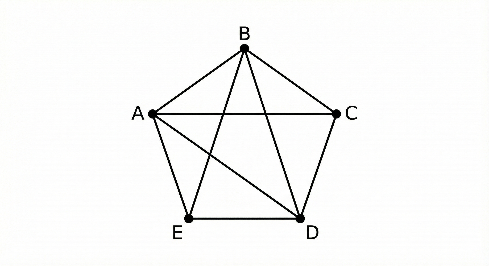

Estructuras de Datos II · Universidad INCCA de Colombia
Introducción a los grafos
En estructuras de datos, un grafo es un modelo muy flexible
que nos permite representar relaciones entre objetos. De forma formal, un grafo
G se define como un par:
G = (V, E)
V: conjunto de vértices o nodos.
E: conjunto de aristas o arcos que conectan pares de vértices.
Cada vértice puede representar una ciudad, una persona, un servidor, un proceso,
etc. Cada arista representa la relación entre ellos: una carretera, una amistad,
un enlace de red, una dependencia, entre otros.
Ejemplo visual de un grafo
En la siguiente figura se muestra un grafo simple con cinco vértices conectados
mediante distintas aristas:

Figura 1. Grafo simple con cinco vértices y varias conexiones.
A partir de una representación como esta, podremos construir su matriz de
adyacencia y su lista de adyacencia en los siguientes posts.
Grafos dirigidos y no dirigidos
Dependiendo de la naturaleza de la relación, un grafo puede ser:
No dirigido: las aristas no tienen dirección. La relación
entre dos vértices es bidireccional (por ejemplo, una carretera de doble vía).
Dirigido (dígrafo): las aristas tienen una dirección,
representada con flechas. La relación va de un vértice origen a un vértice
destino (por ejemplo, el “seguir” en una red social).
Grafos ponderados y no ponderados
Otra clasificación importante es según la existencia de pesos en las aristas:
Grafo no ponderado: solo interesa la existencia o no de
la conexión.
Grafo ponderado: cada arista tiene un peso (distancia,
tiempo, costo, capacidad, etc.).
En cursos más avanzados verás algoritmos como Dijkstra o Floyd–Warshall, que
trabajan directamente con grafos ponderados para hallar rutas de costo mínimo.
¿Cómo se conectan los grafos con los algoritmos?
Los grafos por sí solos son solo estructura. Para sacarles provecho necesitamos
algoritmos que los recorran y analicen. Algunos de los más importantes son:
BFS:
recorre el grafo por niveles.
DFS:
explora una rama del grafo hasta el fondo antes de retroceder.
En los próximos artículos veremos cómo representar el grafo en memoria y cómo
aplicar estos recorridos de forma sistemática.